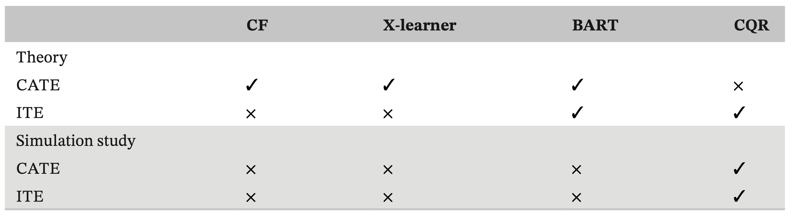
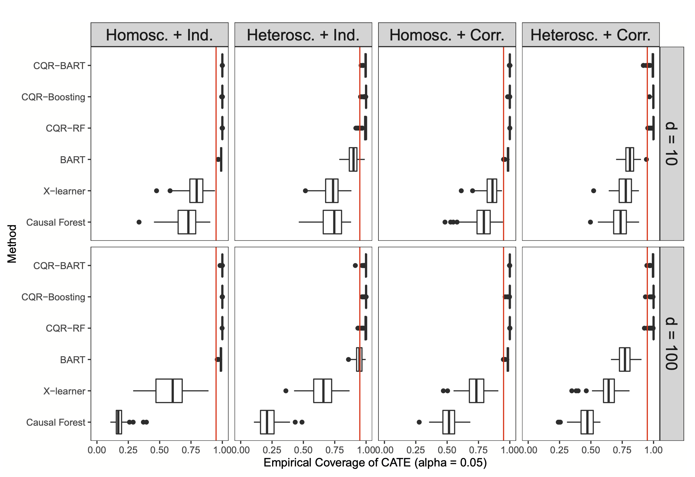
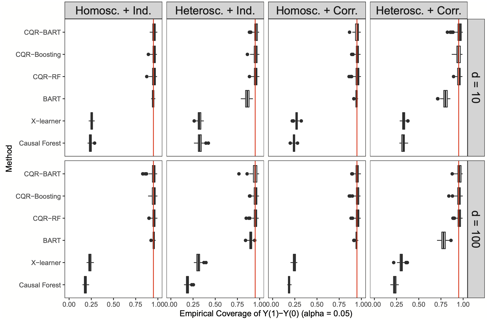
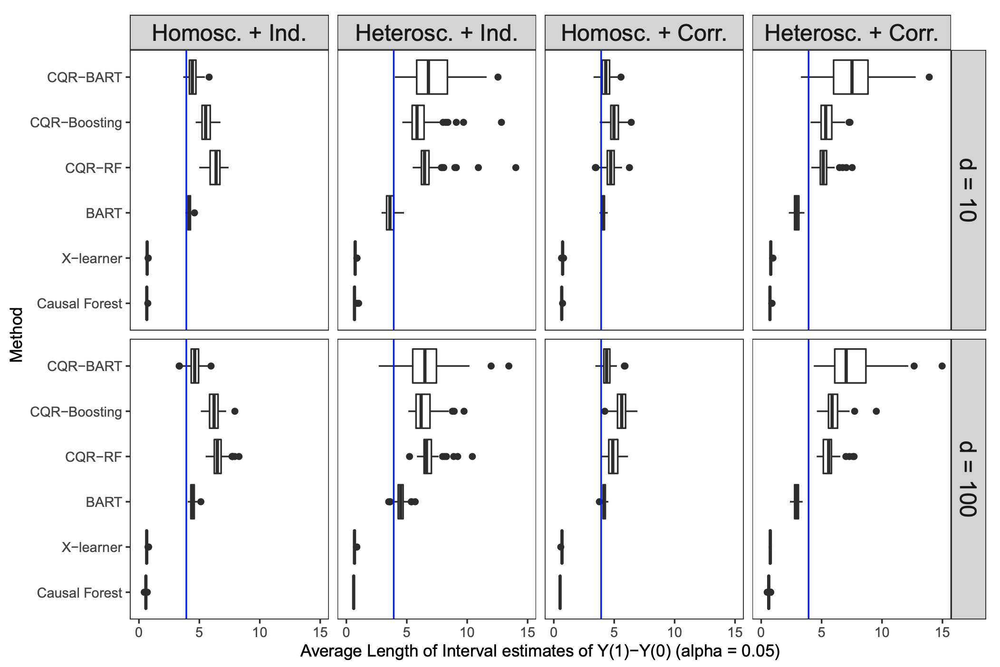
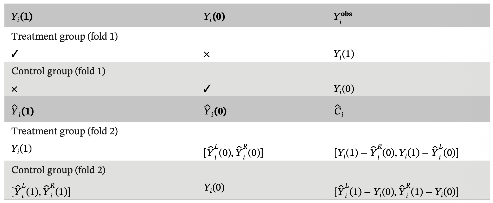
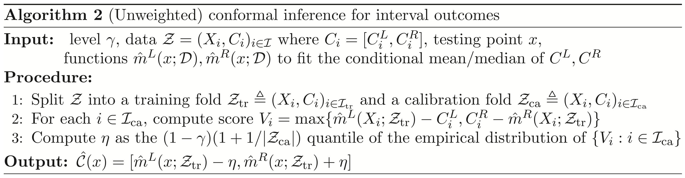
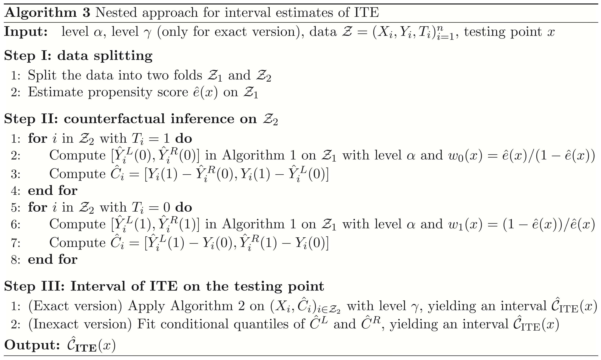
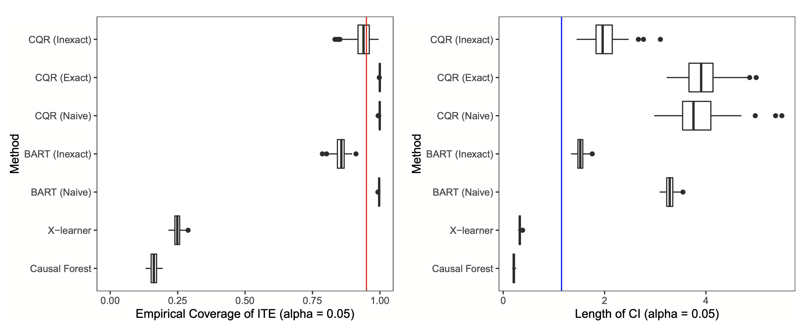
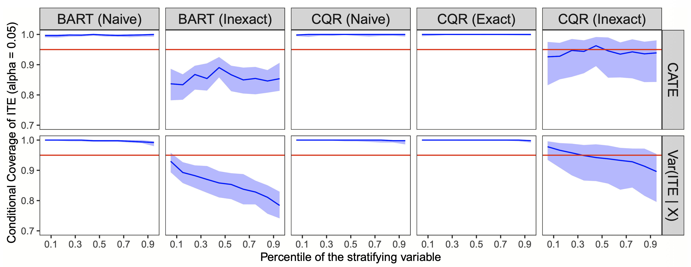

1. From Average Effects to Individual Effects
- Causal Inference (인과추론) 분야에서 지난 수십 년간의 연구는 주로 모집단에 대한 평균 처치 효과(Average Treatment Effect, ATE)를 추정하는 데 집중해 왔습니다.
- 식별(Identification), 추정(Estimation), 그리고 불확실성 정량화(Uncertainty Quantification)에 대한 광범위한 통계적 이론이 이를 뒷받침하고 있습니다.
- 하지만 평균 효과(ATE)는 처치 효과의 분포를 매우 거칠게(coarse) 요약한 것에 불과합니다.
- 경우에 따라서는 ATE만으로 개입(Intervention)의 타당성을 판단하는 것이 불충분하거나, 심지어 오해를 불러일으킬 수도 있습니다.
Motivating Example: The 70/30 Drug Scenario
어떤 약물이 환자의 70%를 완치시키지만, 나머지 30%의 환자에게는 증상을 훨씬 악화시킨다고 가정해 봅시다.
- 이 경우 ATE(평균 효과)는 “양수(Positive)”로 계산될 수 있습니다.
- 하지만 이 평균값만 보고 약물 승인을 결정하는 것이 윤리적으로나 의학적으로 올바른지는 불분명합니다.
- 이것은 인위적인 예시가 아닙니다. 실제 임상 시험에서 명확한 결과가 나오지 않는 경우는 흔하며, 이러한 이질성(Heterogeneity)은 매우 일반적입니다.
The Importance of ITE (Individual Treatment Effect)
- 의학 분야에서는 이미 “환자의 개별성(Individuality)”을 치료 결정의 핵심에 두어야 한다는 목소리가 높습니다.
- NAM은 2018년 보고서를 통해 “One-size-fits-all(천편일률적인)” 접근 방식은 부적절하며, 임상적 특성과 개인의 선호도에 따른 맞춤형 치료가 필요함을 강조했습니다.
- 이러한 개별 처치 효과(Individual Treatment Effect, ITE)에 대한 관심은 의학뿐만 아니라 정치학, 심리학, 사회학, 경제학 등 다양한 분야로 확장되고 있습니다.
2. From Point Estimates to Interval Estimates
- 기존 연구들은 ATE의 한계를 극복하기 위해 조건부 평균 처치 효과(Conditional Average Treatment Effect, CATE)에 주목했습니다.
- 하지만 본 논문은 CATE와 같은 점 추정(Point Estimate)을 넘어, 신뢰할 수 있는 구간 추정(Interval Estimate)으로 나아가야 함을 주장합니다.
2.1 Problem Setup
이 논문은 Neyman(1923)과 Rubin(1974)의 잠재적 결과 프레임워크(Potential Outcome Framework)를 따릅니다.
Sample Size: \(n\)명의 대상(Subjects)
Treatment Indicator: \(T_i \in \{0, 1\}\) (Binary)
Potential Outcomes: \((Y_i(1), Y_i(0))\)
- \(Y_i(1)\): 처치를 받았을 때의 결과
- \(Y_i(0)\): 처치를 받지 않았을 때의 결과
Covariates: \(X_i\) (특성 벡터)
데이터는 i.i.d. 분포 \((Y(1), Y(0), T, X)\)에서 생성된다고 가정합니다. \[(Y_i(1), Y_i(0), T_i, X_i)\overset{\mathrm{iid}}{\sim}(Y(1), Y(0), T, X)\]
Key Assumption 1: SUTVA
- SUTVA(Stable Unit Treatment Value Assumption) 하에서 관측된 결과 \(Y_i^{obs}\)는 다음과 같이 정의됩니다.
\[ Y_i^{obs} = \begin{cases} Y_i(1) & \text{if } T_i = 1 \\ Y_i(0) & \text{if } T_i = 0 \end{cases} \]
- 우리가 알고자 하는 개별 처치 효과(ITE) \(\tau_i\)는 다음과 같이 정의됩니다.
\[ \tau_i \triangleq Y_i(1) - Y_i(0) \tag{1}\]
- 여기서 인과추론의 근본적인 문제(Fundamental Problem of Causal Inference)가 발생합니다.
- 각 개체에 대해 \(Y_i(1)\)과 \(Y_i(0)\) 중 오직 하나만 관측되며, 나머지는 결측(Missing)됩니다.
Key Assumption 2: Strong Ignorability
- 본 논문은 Strong Ignorability 가정을 전제합니다.
\[ (Y(1), Y(0)) \perp T \mid X \tag{2}\]
- 즉, 공변량 \(X\)가 주어졌을 때, 처치 할당 \(T\)와 잠재적 결과들은 독립입니다.
- 이는 처치 할당과 결과 모두에 영향을 미치는 측정되지 않은 교란 요인(Unmeasured Confounder)이 없음을 의미합니다.
2.2 Traditional Inference Targets
- 대부분의 머신러닝 기반 인과추론 방법론은 CATE를 추정하는 데 집중합니다.
- CATE, \(\tau(x)\)는 다음과 같이 정의됩니다.
\[ \tau(x) \triangleq \mathbb{E}[Y(1) - Y(0) \mid X=x] \tag{3}\]
- 이 함수는 두 조건부 평균 함수 \(m_1(x)\)와 \(m_0(x)\)의 차이로 분해할 수 있습니다.
\[ \begin{aligned} \tau(x) &= m_1(x) - m_0(x) \\ \text{where } m_1(x) &= \mathbb{E}[Y(1) \mid X=x] \\ m_0(x) &= \mathbb{E}[Y(0) \mid X=x] \end{aligned} \]
- Strong Ignorability 가정 하에서, 이들은 관측 데이터의 조건부 기댓값인 \(\mathbb{E}[Y^{obs} \mid X=x, T=t]\)로 식별 가능합니다.
Why CATE is Insufficient?
- 기존 연구들이 집중해 온 CATE(Conditional Average Treatment Effect)는 ATE보다 세밀한 정보를 제공하지만, 개별 의사결정(Individual Decision Making)을 위해서는 여전히 불충분합니다.
- 본 논문은 크게 세 가지 관점에서 그 이유를 설명합니다.
1. Expectation vs. Inherent Variability (CI vs. PI)
- CATE는 정의상 ’조건부 평균’에 불과합니다.
\[\tau(x) = \mathbb{E}[Y(1) - Y(0) \mid X=x]\]
- 우리가 \(n \to \infty\)로 데이터를 무한히 모은다면, CATE의 추정 오차(Estimation Uncertainty)는 0으로 수렴합니다.
- 이때 사용되는 것이 신뢰 구간(Confidence Interval, CI)입니다.
- 하지만 실제 환자가 겪게 될 결과는 평균이 아니라 개별 사건입니다.
- 개별 처치 효과(ITE)는 다음과 같이 모델링할 수 있습니다.
\[\text{ITE}_i = \tau(X_i) + \varepsilon_i\]
- 여기서 \(\varepsilon_i\)는 줄어들지 않는 내재적 변동성(Inherent Variability, Noise)입니다.
- 따라서 개별 환자를 위한 의사결정에는 평균의 위치가 아니라, \(\varepsilon\)까지 포함한 예측 구간(Prediction Interval, PI)이 필요합니다.
- CATE의 신뢰 구간은 이 변동성을 포착하지 못하므로, 개인이 겪을 리스크를 과소평가할 위험이 있습니다.
2. Underestimation in High-Dimensional Models
- CATE를 추정하기 위해 Random Forest나 Neural Networks 같은 고차원 기계학습 모델을 사용할 때, 신뢰대(Confidence Band) 형성에는 근본적인 어려움이 따릅니다.
- Bias-Variance Tradeoff: 고차원 모델은 과적합(Overfitting)을 막기 위해 정규화(Regularization) 등을 사용하며, 이는 필연적으로 추정량에 편향(Bias)을 도입합니다.
- Failure of Bootstrap: 부트스트랩이나 정규 근사(Normal Approximation)는 추정량의 분산(Variance)을 측정하는 데는 효과적이지만, 편향(Bias)은 보정하지 못합니다.
- 결과적으로, 표준적인 기법으로 생성된 신뢰 구간은 편향된 추정치를 중심으로 형성되므로, 실제 참값(Truth)을 포함하지 못하는 과소평가(Undercoverage) 문제가 발생합니다.
3. Unidentifiability of ITE Distribution
- 변동성을 고려하기 위해 \(Y(1)\)과 \(Y(0)\)의 차이에 대한 분포를 알고 싶을 수 있습니다.
- 하지만 ITE의 분산을 수식으로 분해해보면 문제가 드러납니다. \[ \begin{aligned} \text{Var}(\text{ITE}) &= \text{Var}(Y(1) - Y(0)) \\ &= \text{Var}(Y(1)) + \text{Var}(Y(0)) - 2\text{Cov}(Y(1), Y(0)) \end{aligned} \]
- \(\text{Var}(Y(1))\)과 \(\text{Var}(Y(0))\)는 각각 처치군과 대조군 데이터로부터 식별 가능(Identifiable)합니다.
- 하지만 공분산 \(\text{Cov}(Y(1), Y(0))\)는 동일한 개체에 대해 두 잠재적 결과를 동시에 관측할 수 없기 때문에 데이터로부터 결코 식별할 수 없습니다(Unidentifiable).
Note on Conditional Quantile Treatment Effect (CQTE)
대안으로 제시되는 CQTE는 \(Y(1)\)의 분위수와 \(Y(0)\)의 분위수의 차이(\(Q_{Y(1)} - Q_{Y(0)}\))일 뿐입니다. 우리가 진정으로 원하는 ITE의 분위수(\(Q_{Y(1)-Y(0)}\))는 위에서 언급한 결합 분포(Joint Distribution)의 식별 불가능성 문제로 인해 구할 수 없습니다.
이것이 본 논문이 결합 분포를 직접 모델링하는 대신, Conformal Inference를 통해 각 잠재적 결과의 한계 분포(Marginal Distribution)를 보장하는 우회로를 택한 이유입니다.
2.3 Coverage of Interval Estimates
이 연구의 목표는 \(Y(1)\), \(Y(0)\), 그리고 최종적으로 ITE \(\tau_i\)를 포함하는 예측 구간(Prediction Interval)을 구성하는 것입니다.
예를 들어, 사전 지정된 유의 수준 \(\alpha\)에 대해 \(Y(1)\)에 대한 구간 \(\hat{C}_1(x)\)는 다음의 주변 커버리지(Marginal Coverage)를 만족해야 합니다.
\[ \mathbb{P}(Y(1) \in \hat{C}_1(X)) \ge 1 - \alpha \tag{4}\]
- 마찬가지로 ITE에 대해서도 다음을 만족하는 \(\hat{C}_{ITE}(x)\)를 찾고자 합니다.
\[ \mathbb{P}(Y(1) - Y(0) \in \hat{C}_{ITE}(X)) \ge 1 - \alpha \tag{5}\]
The Oracle Estimate
- 만약 우리가 \(X=x\)일 때 \(Y(1)\)의 참 분위수(True Quantile) \(q_{\beta}(x)\)를 완벽하게 알고 있다면, 오라클 구간(Oracle Estimate)은 다음과 같이 설정될 것입니다.
\[ C_1(x) = [q_{\alpha/2}(x), q_{1-\alpha/2}(x)] \]
- 현실에서는 제한된 샘플 크기와 모델 불확실성으로 인해 \(q_{\beta}(x)\)를 정확히 추정하기 어렵습니다.
Marginal vs. Conditional Coverage
위 식 (4), (5)는 \(X\)에 대한 평균적인(Marginal) 커버리지를 의미합니다.
특정 환자 \(x\)에 대한 조건부 커버리지(Conditional Coverage)를 보장하는 것은 가정 없이는 불가능하다고 알려져 있습니다.
하지만 본 연구는 조건부 커버리지에 근접하는 합리적인 근사(Approximation)를 목표로 합니다.
2.4 General Coverage Criteria (Transportability)
- 전통적인 인과추론에서는 ATE보다 처치군에 대한 평균 처치 효과(ATT, Average Treatment Effect on the Treated)를 선호하기도 합니다.
- 이는 \(T=1\)인 집단의 특성을 반영합니다.
\[ \mathbb{P}(Y(t) \in \hat{C}_t(X) \mid T=1) \ge 1 - \alpha \quad (t = 0, 1) \tag{6}\]
- 이를 일반화하여, 연구 집단(Study Population)과 타겟 집단(Target Population)의 분포가 다를 때(Covariate Shift), 타겟 집단의 공변량 분포 \(Q_X\)를 고려한 일반화된 커버리지 기준을 세울 수 있습니다.
\[ \mathbb{P}_{(X, Y(t)) \sim Q_X \times P_{Y(t)|X}} (Y(t) \in \hat{C}_t(X)) \ge 1 - \alpha \quad (t = 0, 1) \tag{7}\]
- 만약 \(Q_X = P_{X|T=1}\)이라면, 이는 ATT 관점에서의 커버리지가 됩니다.
- 이러한 접근은 일반화 가능성(Generalizability) 또는 이식 가능성(Transportability) 문제로 확장될 수 있습니다.
3. From Observables to Counterfactuals
- 우리의 목표는 \(Y(1)\)과 \(Y(0)\)에 대한 예측 구간 \(\hat{C}_1(x), \hat{C}_0(x)\)를 구성하는 것입니다.
- 하지만 우리는 \(Y(1)\)을 처치군(\(T=1\))에서만, \(Y(0)\)를 대조군(\(T=0\))에서만 관찰할 수 있습니다.
- 저자들은 ITE 추정 문제를 Covariate Shift(공변량 이동) 문제로 재해석하고, Weighted Conformal Inference(가중 컨포멀 추론)를 통해 \(Y(1)\)과 \(Y(0)\)에 대한 신뢰할 수 있는 예측 구간을 구성하는 방법을 제시합니다.
- 특히, 이 방법이 랜덤화 실험(RCT)에서는 정확한(Exact) 커버리지를 보장하고, 관찰 연구(Observational Study)에서는 이중 강건성(Doubly Robustness)을 가짐을 이론적으로 증명합니다.
3.1 Counterfactuals and Covariate Shift
반사실적 추론(Counterfactual Inference)은 기계학습에서 널리 연구된 Covariate Shift 문제의 특수한 형태로 볼 수 있습니다.
Strong Ignorability 가정(\((Y(1), Y(0)) \perp T | X\)) 하에서, 관측된 처치군 데이터의 결합 분포는 다음과 같습니다.
\[ P_{X|T=1} \times P_{Y(1)|X} \]
- 하지만 우리가 추론하고자 하는 타겟 모집단(전체 모집단 또는 특정 타겟 집단)의 분포는 다음과 같습니다.
\[ Q_X \times P_{Y(1)|X} \]
- 여기서 중요한 점은 조건부 결과 분포 \(P_{Y(1)|X}\)는 동일하지만, 공변량 분포가 \(P_{X|T=1}\)에서 \(Q_X\)로 변화했다는 것입니다.
- 기존의 Conformal Inference는 훈련 데이터와 테스트 데이터의 분포가 동일하다는 가정(Exchangeability)에 의존하므로, 이러한 분포 변화(Shift)가 있을 때는 보정(Calibration)이 필요합니다.
3.2. Weighted Conformal Inference
- 분포 변화에 대응하기 위해, 저자들은 Tibshirani et al. (2019b)이 제안한 Weighted Conformal Inference를 도입합니다.
Standard vs. Weighted Coverage
- 표준 Conformal Prediction은 다음의 Marginal Coverage를 보장합니다.
\[ \mathbb{P}_{(X, Y) \sim P_X \times P_{Y|X}} (Y \in \hat{C}(X)) \ge 1 - \alpha \tag{8}\]
- 하지만 Covariate Shift가 존재하는 우리의 설정에서는, 타겟 분포 \(Q_X\)에 대한 커버리지가 필요합니다.
\[ \mathbb{P}_{(X, Y) \sim Q_X \times P_{Y|X}} (Y \in \hat{C}(X)) \ge 1 - \alpha \tag{9}\]
- 이를 달성하기 위해, 우리는 훈련 분포 \(P_X\)와 타겟 분포 \(Q_X\) 사이의 우도비(Likelihood Ratio)인 \(w(x)\)를 사용해야 합니다.
\[ w(x) = \frac{dQ_X(x)}{dP_X(x)} \]
Algorithm: Weighted Split-CQR
- 본 논문에서는 Conformal Quantile Regression(CQR)을 확장한 Weighted Split-CQR 알고리즘을 사용합니다.

알고리즘의 핵심 단계는 다음과 같습니다:
- Split: 데이터를 훈련 집합 \(\mathcal{Z}_{tr}\)과 교정 집합 \(\mathcal{Z}_{ca}\)로 분할합니다.
- Fit: \(\mathcal{Z}_{tr}\)을 사용하여 조건부 분위수 함수 \(\hat{q}_{\alpha_{lo}}(x), \hat{q}_{\alpha_{hi}}(x)\)를 학습합니다.
- Score: \(\mathcal{Z}_{ca}\)의 각 데이터 포인트에 대해 Non-conformity Score \(V_i\)를 계산합니다. \[V_i = \max \{ \hat{q}_{\alpha_{lo}}(X_i) - Y_i, Y_i - \hat{q}_{\alpha_{hi}}(X_i) \}\]
- Weight: 각 포인트의 가중치 \(W_i = \hat{w}(X_i)\)를 계산하고, 이를 정규화하여 확률 질량(Probability Mass)을 구합니다. 이때 과거 데이터와 현재 테스트 데이터에 서로 다른 가중치 확률을 부여합니다.
교정 데이터의 가중치 (\(\hat{p}_i(x)\)): 테스트 포인트 \(x\)와 유사한 교정 데이터 \(X_i\)의 오차를 더 중요하게 반영합니다. \[\hat{p}_i(x) = \frac{W_i}{\sum_{j \in \mathcal{I}_{ca}} W_j + \hat{w}(x)}\]
테스트 포인트의 가중치 (\(\hat{p}_\infty(x)\)): 현재 예측하려는 데이터 \(x\) 자신이 가질 수 있는 잠재적 불확실성을 반영합니다. 이론적 보장을 위해 이 확률은 무한대 오차(\(\infty\))에 할당됩니다. \[\hat{p}_\infty(x) = \frac{\hat{w}(x)}{\sum_{j \in \mathcal{I}_{ca}} W_j + \hat{w}(x)}\]
- Calibrate:
오차들의 가중 분포(Weighted Empirical Distribution)에서 \((1-\alpha)\)-th 분위수 \(\eta(x)\)를 계산합니다.
즉, 오차 \(V_i\)를 오름차순으로 정렬한 뒤, 누적 가중치 합이 \(1-\alpha\)를 넘어서는 지점을 찾습니다.
\[\eta(x) = \inf \left\{ v : \sum_{i \in \mathcal{I}_{ca}} \hat{p}_i(x) \mathbb{I}(V_i \le v) + \hat{p}_\infty(x) \mathbb{I}(\infty \le v) \ge 1-\alpha \right\}\]
- 최종적으로 이 \(\eta(x)\)만큼 구간을 확장하여 예측 구간을 생성합니다. \[\hat{C}(x) = [\hat{q}_{\alpha_{lo}}(x) - \eta(x), \hat{q}_{\alpha_{hi}}(x) + \eta(x)] \tag{10}\]
Theoretical Guarantee (Proposition 1)
- 만약 우도비 \(w(x)\)가 정확하다면, 이 알고리즘은 식 (2)의 커버리지를 정확히 만족합니다.
- \(w(x)\)를 추정해서 사용하더라도, 추정 오차가 작다면 커버리지는 근사적으로 보장됩니다.
3.3. The Role of Propensity Score
- 그렇다면 이 가중치 \(w(x)\)는 인과추론에서 무엇에 해당할까요?
- 놀랍게도(혹은 자연스럽게도), 이것은 성향 점수(Propensity Score)와 직결됩니다.
Connection to IPW
성향 점수 \(e(x) = \mathbb{P}(T=1|X=x)\)는 관찰 연구에서 ATE를 식별하는 데 핵심적인 역할을 합니다. \[ \begin{aligned} \mathbb{E}[Y(1) - Y(0)] &= \mathbb{E}[w_1(X){Y^{obs} I(T=1)} - w_0(X){Y^{obs} I(T=0)}] \\ \text{where } w_1(x) &= \frac{1}{e(x)}, w_0(x) = \frac{1}{1- e(x)} \end{aligned} \tag{11}\]
Inverse Propensity Weighting (IPW) 추정량은 다음과 같이 정의됩니다. \[ \mathbb{E}[Y(1)] = \mathbb{E}\left[ \frac{Y^{obs} I(T=1)}{e(X)} \right] \]
Weighted Conformal Inference에서의 가중치 도출 과정은 IPW와 매우 유사합니다.
예를 들어, \(Y(1)\)에 대한 ATE 타입의 추론을 위해 베이즈 정리를 적용하면 다음과 같습니다.
\[ \begin{aligned} w_1(x) &= \frac{dP_X(x)}{dP_{X|T=1}(x)} \\ &= \frac{dP_X(x)}{dP_X(x) \times \mathbb{P}(T=1 \mid x) / \mathbb{P}(T=1)} \\ &= \frac{dP_X(x)}{dP_X(x) \times e(x) / \mathbb{P}(T=1)} \\ &= \frac{\mathbb{P}(T=1)}{e(x)} \propto \frac{1}{e(x)} \end{aligned} \]
- Weighted Conformal Inference는 가중치의 스케일(상수배)에 불변(Invariant)하므로, 단순히 성향 점수의 역수를 가중치로 사용하면 됩니다.
Summary of Weight Functions
- 추론 대상(ATE, ATT, ATC)이나 타겟 분포(Generalizability)에 따라 적절한 가중치 함수가 달라집니다.

- ATE: \(Y(1)\)에는 \(1/e(x)\), \(Y(0)\)에는 \(1/(1-e(x))\)를 사용.
- ATT (Effect on Treated): \(Y(1)\)에 대해서는 가중치가 필요 없음(1), \(Y(0)\)에 대해서는 오즈(Odds)인 \(e(x)/(1-e(x))\)를 사용.
- Generalizability: 타겟 분포와의 비율 \(dQ/dP\)를 추가적으로 곱해줌.
- 이 방법론은 두 가지 강력한 이론적 성질을 가집니다.
3.4. Conformalized Counterfactual Inference is Exact for Randomized Trials
완전 순응(Perfect Compliance)이 있는 무작위 실험(RCT)의 경우, 성향 점수 \(e(x)\)는 연구자에 의해 설계되었으므로 정확히 알 수 있습니다.
따라서 Weighted Conformal Inference는 유한 샘플(Finite Sample)에서도 완벽한 커버리지를 보장합니다.
이는 점근적(Asymptotic) 이론에 의존하는 기존 방법론들과 차별화되는 지점입니다.
심지어 Overlap 조건이 위배되어 \(e(x) \approx 0\)인 영역이 있더라도, 알고리즘은 자연스럽게 구간의 길이를 무한대로 늘려 커버리지를 방어합니다.
3.5. Conformalized Counterfactual Inference is Doubly Robust
- 관찰 연구에서는 성향 점수 \(e(x)\)와 결과 모델(Quantile) \(q(x)\)를 모두 추정해야 합니다.
- 본 논문의 방법론은 이중 강건성(Double Robustness)을 가집니다. 즉, 다음 두 조건 중 하나만 만족해도 커버리지가 근사적으로 보장됩니다.
- 성향 점수 모델이 정확함 (\(\hat{e}(x) \approx e(x)\))
- 조건부 분위수 모델이 정확함 (\(\hat{q}(x) \approx q(x)\))
Intuition
만약 \(\hat{e} \approx e\)라면:
- 가중치가 정확하므로, 분위수 모델 \(\hat{q}\)가 엉망이어도 Weighted CP의 원리에 의해 커버리지가 보장됩니다.
만약 \(\hat{q} \approx q\)라면:
- 잔차(Residuals)의 분포가 안정화되어, 가중치가 부정확해도 \(0\) 주변에서의 분포(Quantile of residuals)가 보존됩니다.
Theorem 1 (Formal Statement)
- 정리 1은 이를 수학적으로 정당화합니다.
- \(\hat{e}_N\)과 \(\hat{q}_{\beta, N}\)이 데이터 크기 \(N\)이 커짐에 따라 수렴할 때, 다음의 이중 강건성 커버리지를 만족합니다.
\[ \lim_{N,n \to \infty} \mathbb{P}_{(X, Y(1)) \sim P_X \times P_{Y(1)|X}} (Y(1) \in \hat{C}_{N,n}(X)) \ge 1 - \alpha \tag{12}\]
- 또한, 조건부 분위수 모델이 정확하게 추정된 경우(A2 조건), 조건부 커버리지(Conditional Coverage) 또한 점근적으로 달성됩니다.
\[ \lim_{N,n \to \infty} \mathbb{P}_{X \sim P_X} (\mathbb{P}(Y(1) \in \hat{C}_{N,n}(X) | X) \le 1 - \alpha - \epsilon) = 0 \tag{13}\]
- 이는 이 방법론이 단순히 평균적인 커버리지만 맞추는 것이 아니라, 개별 환자 수준에서의 불확실성도 잘 포착할 수 있음을 시사합니다.
3.6. Numerical Experiments
Simulation Setup
- 저자들은 Wager and Athey (2018)의 설정을 변형하여 시뮬레이션을 설계했습니다.
Data Generation Process
Covariates (\(X\)):
- \(X = (X_1, ..., X_d)^T\)는 다변량 가우시안 분포에서 생성된 뒤 변환됩니다. \[X_j = \Phi(X_j')\]
- 여기서 \(\Phi\)는 표준정규분포의 CDF이며, \(Var(X_j')=1\), \(Cov(X_j', X_{j'}') = \rho\)입니다. \(\rho=0\)이면 독립, \(\rho>0\)이면 상관관계가 존재합니다.
Potential Outcomes:
- 순수한 반사실적(Counterfactual) 추론 문제를 다루기 위해 \(Y(0) \equiv 0\)으로 고정합니다.
- \(Y(1)\)은 다음과 같이 생성됩니다:
\[ \mathbb{E}[Y(1)|X] = f(X_1)f(X_2), \quad f(x) = \frac{2}{1+\exp\{-12(x-0.5)\}} \]
\[ Y(1) = \mathbb{E}[Y(1)|X] + \sigma(X)\epsilon, \quad \epsilon \sim N(0, 1) \]
- 이 설정은 비선형성(Non-linearity)을 포함하고 있습니다.
Propensity Score:
- 성향 점수 \(e(x)\)는 다음과 같이 설정하여, 항상 \(0.25 \le e(x) \le 0.5\) 범위에 있도록 하여 충분한 Overlap을 보장합니다.
\[ e(x) = \frac{1}{4}(1 + \beta_{2,4}(X_1)) \]
- 여기서 \(\beta_{2,4}\)는 Beta(2,4) 분포의 CDF입니다.
Scenarios
- 총 \(2 \times 2 \times 2 = 8\)가지 시나리오를 고려합니다.
- Dimension: Low (\(d=10\)) vs. High (\(d=100\))
- Correlation: Uncorrelated (\(\rho=0\)) vs. Correlated (\(\rho=0.9\))
- Error Variance: Homoscedastic (\(\sigma^2(x) \equiv 1\)) vs. Heteroscedastic (\(\sigma^2(x) = -\log X_1\))
Competing Methods
본 연구의 방법론(Weighted Split-CQR)을 다음의 세 가지 널리 알려진 방법들과 비교합니다.
- Causal Forest (CF):
grf패키지 사용.- Infinitesimal Jackknife를 사용해 CATE의 분산을 추정합니다.
- 본래 ITE 구간 추정용은 아닙니다.
- X-learner:
causalToolbox패키지 사용.- Bootstrap을 사용해 CATE의 분산을 추정합니다.
- 역시 ITE용은 아닙니다.
- BART (Bayesian Additive Regression Trees):
bartMachine패키지 사용.- 베이지안 기법으로 Credible Interval(CATE용)과 Prediction Interval(ITE용)을 모두 생성할 수 있어 가장 강력한 경쟁자입니다.
Weighted Split-CQR (Our Method)은 성향 점수 추정에 Gradient Boosting을 사용하며, 조건부 분위수(Quantile) 추정에는 (1) Quantile RF, (2) Quantile Boosting, (3) BART 세 가지를 각각 적용하여 테스트했습니다.
Results: Coverage Performance
- 실험은 100번 반복되었으며, 매번 10,000개의 테스트 포인트에 대해 95% 신뢰구간/예측구간을 생성했습니다.
Theoretical vs. Empirical Coverage
- 먼저 각 방법론이 이론적으로 보장하는 커버리지와 실제 시뮬레이션 결과를 요약한 표입니다.

- 이론(Theory):
- CF와 X-learner는 CATE(\(\tau(x)\))에 대한 커버리지만 보장합니다.
- 반면, CQR은 ITE(\(Y(1)-Y(0)\))에 대한 커버리지를 보장합니다.
- 실제(Simulation):
- CATE에 대해서조차 CF와 X-learner는 커버리지가 불충분함을 보여줍니다.
- 반면 CQR은 CATE와 ITE 모두에 대해 유효한 커버리지를 달성합니다.
Coverage of CATE
- 아래 그림은 CATE(조건부 평균)에 대한 커버리지 결과입니다.

- CF & X-learner: 모든 시나리오에서 저조한 성능을 보이며, 특히 고차원(\(d=100\))에서 성능이 급격히 하락합니다.
- BART: 대체로 좋은 성능을 보이지만, “Correlated Covariates + Heteroscedastic Errors” (가장 오른쪽 열) 시나리오에서는 커버리지가 무너지는 모습을 보입니다.
- CQR (제안 방법): ITE를 타겟으로 설계되었음에도 불구하고, 모든 시나리오에서 95% 이상의 CATE 커버리지를 달성합니다. 다소 보수적(Conservative)일 수 있으나, 안정적입니다.
Coverage of ITE (Main Result)
- 이 논문의 핵심 주제인 개별 처치 효과(ITE)에 대한 커버리지입니다.

- CF & X-learner: 예상대로 ITE를 전혀 커버하지 못합니다. 이는 CATE 신뢰 구간을 ITE 예측 구간으로 오해해서는 안 된다는 점을 시사합니다.
- BART: 등분산(Homoscedastic) 환경에서는 완벽한 커버리지를 보이지만, 이분산(Heteroscedastic) 환경, 특히 상관관계가 있는 경우 성능이 떨어집니다.
- CQR: 모든 시나리오(차원, 상관관계, 이분산성 여부)에서 거의 정확한 95% 커버리지를 달성합니다.
Results: Interval Length & Efficiency
- 커버리지가 높다고 무조건 좋은 것은 아닙니다. 구간의 길이가 너무 넓으면 정보가치가 없기 때문입니다.

- CF & X-learner: 구간 길이가 매우 짧습니다. 앞서 보았듯 이는 커버리지 실패(Poor calibration)의 결과이므로 의미가 없습니다.
- BART vs. CQR:
- 등분산(Homoscedastic) 환경에서 BART는 가장 짧은 구간을 생성합니다. CQR(with BART learner)도 이에 근접한 효율성을 보입니다.
- 이분산(Heteroscedastic) 환경에서 BART의 구간은 너무 짧아 커버리지 실패로 이어집니다. 반면 CQR은 커버리지를 유지하기 위해 구간 길이를 늘립니다. 이때 CQR의 구간 길이 변동성이 커지는 경향이 있습니다.
Results: Conditional Coverage
- 마지막으로, 조건부 커버리지(Conditional Coverage)를 분석합니다.
- 이분산 설정(\(\sigma^2(x) = -\log X_1\))에서는 \(X_1 \to 0\)일 때 분산이 무한대로 발산하므로, 예측하기 가장 어려운 영역입니다.

- BART: 조건부 분산이 커질수록(x축의 오른쪽), 커버리지 확률이 급격히 떨어지는 것을 확인할 수 있습니다. 평균적으로는 괜찮을지 몰라도, 불확실성이 큰 환자군에 대해서는 리스크를 과소평가할 위험이 있습니다.
- CQR: 분산이 큰 영역에서도 커버리지를 안정적으로 유지(Flat curve)합니다. 특히 Quantile RF나 Quantile Boosting을 사용한 CQR이 BART 기반 CQR보다 더 나은 조건부 커버리지를 보입니다.
Summary
- 이번 실험 결과는 Weighted Split-CQR의 강력함을 실증적으로 보여주었습니다.
- Robustness: 기존 방법론(BART 포함)이 실패하는 고차원, 상관관계, 이분산성 환경에서도 CQR은 약속된 커버리지(95%)를 지켜냈습니다.
- Safety: CATE를 위한 신뢰 구간(CF, X-learner)을 ITE 예측에 무리하게 사용할 경우, 불확실성을 심각하게 과소평가할 수 있음이 드러났습니다.
- Adaptability: CQR은 데이터의 불확실성 수준(조건부 분산)에 따라 구간의 길이를 적절히 조절하여, 어려운 케이스에서도 신뢰할 수 있는 예측을 제공합니다.
- 이로써 우리는 평균적인 효과를 넘어, 개별 환자에게 적용 가능한 안전하고 신뢰할 수 있는 인과추론 도구를 확보하게 되었습니다.
4. From Counterfactuals to Treatment Effects
지금까지는 연구에 참여한 대상(Subjects in the study)에 대해, 관측되지 않은 반사실적 결과(Counterfactual Outcome)를 예측하여 ITE 구간을 생성하는 방법을 다루었습니다.
하지만 실제 상황에서 가장 중요한 질문은 다음과 같습니다.
- “아직 연구에 참여하지 않은, 두 잠재적 결과가 모두 결측된(Both missing) 새로운 환자에게는 어떻게 적용할 것인가?”
아래는 이미 구축한 Counterfactual Inference 도구를 활용하여, 완전히 새로운 데이터 포인트(Test Point) \(x\)에 대한 ITE 예측 구간을 생성하는 두 가지 접근법(Naive Approach와 Nested Approach)을 다룹니다.
4.1. A Naive Approach
가장 직관적인 첫 번째 방법은 Part 2에서 개발한 반사실적 예측 구간을 각각 독립적으로 적용하는 것입니다.
임의의 테스트 포인트 \(x\)에 대해, 우리는 \(Y(1)\)과 \(Y(0)\)에 대한 \(1-\alpha/2\) 수준의 예측 구간을 각각 생성할 수 있습니다.
- \(Y(1)\)에 대한 구간: \([\hat{Y}^L(1; x), \hat{Y}^R(1; x)]\)
- \(Y(0)\)에 대한 구간: \([\hat{Y}^L(0; x), \hat{Y}^R(0; x)]\)
이 두 구간을 결합(Contrast)하여 ITE(\(\tau = Y(1) - Y(0)\))에 대한 구간 \(\hat{C}_{ITE}(x)\)를 다음과 같이 구성할 수 있습니다.
\[ \hat{C}_{ITE}(x) = [\hat{Y}^L(1; x) - \hat{Y}^R(0; x), \quad \hat{Y}^R(1; x) - \hat{Y}^L(0; x)] \]
Coverage Guarantee
만약 각각의 반사실적 구간이 유효한 커버리지를 가진다면, 본페로니 교정(Bonferroni correction)의 원리에 의해 이 결합 구간 또한 최소 \(1-\alpha\) 수준의 커버리지를 보장합니다.
하지만 이 방식은 보수적(Conservative)일 가능성이 높습니다.
두 구간의 최악의 경우(Worst-case)를 조합하기 때문에 구간의 길이가 필요 이상으로 넓어질 수 있습니다.
4.2. A Nested Approach
- 저자들은 Naive Approach의 한계를 극복하기 위해 Nested Approach(중첩 접근법)를 제안합니다.
- 이 방법은 데이터를 분할하여 ITE에 대한 ’대리 구간(Surrogate Interval)’을 먼저 생성하고, 이를 학습하여 일반화하는 전략을 취합니다.
The Procedure
이 절차는 데이터를 두 개의 폴드(Fold 1, Fold 2)로 나누는 것으로 시작합니다.
- Fold 1 (Training Counterfactuals):
- 첫 번째 폴드를 사용하여 반사실적 구간 모델 \(\hat{C}_1(x)\)와 \(\hat{C}_0(x)\)를 학습합니다.
- Fold 2 (Constructing Surrogate Intervals):
두 번째 폴드에 있는 각 유닛 \(i\)에 대해, 관측된 \(Y_i^{obs}\)와 처치 여부 \(T_i\)를 바탕으로 ITE 구간 \(\hat{C}_i\)를 생성합니다.
만약 \(T_i = 1\)이라면:
- 우리는 \(Y_i(1)\)을 알고 있습니다.
- 따라서 \(Y_i(0)\)에 대한 예측 구간 \(\hat{C}_0(X_i)\)를 사용하여 ITE 구간을 만듭니다. \[\hat{C}_i = Y_i^{obs} - \hat{C}_0(X_i) = [Y_i^{obs} - \hat{Y}_R(0), Y_i^{obs} - \hat{Y}_L(0)]\]
만약 \(T_i = 0\)이라면:
- 우리는 \(Y_i(0)\)를 알고 있습니다.
- \(Y_i(1)\)에 대한 예측 구간 \(\hat{C}_1(X_i)\)를 사용합니다. \[\hat{C}_i = \hat{C}_1(X_i) - Y_i^{obs} = [\hat{Y}_L(0) - Y_i^{obs}, \hat{Y}_R(0) - Y_i^{obs}]\]

Theoretical Justification
- 이렇게 생성된 구간 \(\hat{C}_i\)가 실제로 ITE를 잘 커버할까요? 수학적으로 이를 증명할 수 있습니다.
- Fold 2에 있는 임의의 유닛 \(i\)에 대해 커버리지 확률은 다음과 같이 분해됩니다.
\[ \begin{aligned} \mathbb{P}(Y_i(1) - Y_i(0) \in \hat{C}_i) &= \mathbb{P}(T_i=1)\mathbb{P}(Y_i(0) \in \hat{C}_0(X_i) \mid T_i=1) \\ &+ \mathbb{P}(T_i=0)\mathbb{P}(Y_i(1) \in \hat{C}_1(X_i) \mid T_i=0) \end{aligned} \tag{14}\]
- Weighted Conformal Inference를 통해 각 조건부 확률이 \(1-\alpha\) 이상이 되도록 만들었으므로, 전체 확률 또한 보장됩니다.
\[ \mathbb{P}(Y_i(1) - Y_i(0) \in \hat{C}_i) \ge 1-\alpha \tag{15}\]
- 결과적으로, Nested Procedure는 Fold 2 데이터셋을 \((X_i, \hat{C}_i)\) 형태의 새로운 데이터셋으로 변환합니다.
- 여기서 \(\hat{C}_i\)는 ITE에 대한 불확실한 관측값(Noisy measurement) 역할을 합니다.
4.3. An Inexact and an Exact Method Under The Nested Framework
- 이제 우리는 \((X_i, \hat{C}_i)\) 데이터셋을 가지고 있습니다.
- 이를 활용해 새로운 환자 \(x\)에 대한 ITE 구간 \(\tilde{C}_{ITE}(x)\)를 어떻게 생성할까요?
- 저자들은 Inexact Method와 Exact Method 두 가지를 제시합니다.
The Inexact Method
- 가장 간단한 방법은 머신러닝 모델을 사용하여 \(\hat{C}_i\)의 왼쪽 끝점(Left endpoint)과 오른쪽 끝점(Right endpoint)을 학습하는 것입니다.
- 예를 들어, 왼쪽 끝점의 40% 분위수와 오른쪽 끝점의 60% 분위수를 예측하는 모델을 각각 적합할 수 있습니다.
- 이 방법은 계산이 빠르고 구현이 쉽지만, 새로운 데이터 포인트에 대한 엄밀한 커버리지 보장(Formal Guarantee)은 제공하지 않습니다.
- 따라서 “Inexact”라고 부릅니다.
The Exact Method (Double Conformal)
매우 민감한 의료 결정 등 엄밀한 보장이 필요한 경우, 두 번째 Conformal Inference를 적용할 수 있습니다.
우리의 목표는 다음을 만족하는 구간 확장 함수(Interval Expansion Function) \(\hat{\mathcal{C}}(X)\)를 찾는 것입니다. \[\mathbb{P}(\hat{C}_i \subset \hat{\mathcal{C}}(X)) \ge 1-\gamma \tag{16}\]
만약 이것이 성립한다면, 전체 ITE에 대한 커버리지는 \(1 - (\alpha + \gamma)\) 수준으로 보장됩니다.
Algorithm 2: Conformal Inference for Interval Outcomes
- 이를 위해 저자들은 구간형 결과변수(Interval Outcome)를 위한 Conformal Inference 알고리즘을 제안합니다.

- 데이터 \((X_i, C_i)\)를 다시 학습/교정 폴드로 나눕니다.
- 구간의 양 끝점 \(C^L, C^R\)에 대한 평균/중앙값을 예측하는 모델 \(\hat{m}^L, \hat{m}^R\)을 학습합니다.
- Non-conformity Score \(V_i\)를 계산합니다. \[V_i = \max \{ \hat{m}^L(X_i) - C_i^L, \quad C_i^R - \hat{m}^R(X_i) \}\]
- 이 점수는 예측된 구간 \([\hat{m}^L, \hat{m}^R]\)이 실제 구간 \(C_i\)를 포함하지 못하는 정도(거리)를 의미합니다.
- 이 점수의 분위수 \(\eta\)를 계산하여 최종 구간을 확장합니다.
Summary of Nested Algorithm
- 최종적으로, 이 모든 과정을 통합한 Algorithm 3는 다음과 같습니다.

- Step I: 데이터 분할 (\(\mathcal{Z}_1, \mathcal{Z}_2\)) 및 성향 점수 추정.
- Step II: \(\mathcal{Z}_2\)의 각 데이터에 대해 Counterfactual Inference 수행 \(\to\) 대리 구간 \(\hat{C}_i\) 생성.
- Step III: \((X_i, \hat{C}_i)\) 데이터를 사용하여 Inexact(Quantile Regression) 또는 Exact(Algorithm 2) 방식으로 최종 모델 학습.
4.4. Empirical Performance
- 새로운 환자(Test Subject)에 대해 ITE 구간을 추정하기 위한 Naive Approach와 Nested Approach를 제안했습니다.
- 특히 Nested Approach는 대리 구간(Surrogate Interval)을 생성하여 모델을 학습시키는 독창적인 방식이었습니다.
- 아래에서는 이 방법론들의 실증적 성능(Empirical Performance)을 검증합니다.
- 2018 Atlantic Causal Inference Conference (ACIC) 워크숍 데이터를 기반으로 한 시뮬레이션 결과와, 실제 교육학 실험인 NLSM(National Study of Learning Mindsets) 데이터 재분석 결과를 다룹니다.
Simulation Study: ACIC 2018 / NLSM Data
- 연구진은 방법론의 성능을 평가하기 위해 2018 ACIC 워크숍 데이터를 활용하여 수치 실험을 설계했습니다.
- 이 데이터는 NLSM이라는 대규모 무작위 행동 개입 실험을 기반으로 하여, 관찰 연구(Observational Study)의 특성을 모방하도록 생성된 합성 데이터셋입니다.
Data Generation Process
커버리지(Coverage)를 평가하기 위해서는 Ground Truth(실제 ITE)를 알아야 합니다.
하지만 원본 데이터는 개인정보 문제로 제한적으로 공개되었고, ITE에 대한 Ground Truth가 없었습니다.
따라서 저자들은 공개된 정보를 바탕으로 다음과 같이 합성 데이터를 생성했습니다.
- Data Splitting: 전체 데이터를 \(\mathcal{Z}_1\)(20%)과 \(\mathcal{Z}_2\)(80%)로 나눕니다.
- Base Outcomes: \(\mathcal{Z}_1\)에서 Random Forest를 학습하여 \(\mathbb{E}[Y(0)]\)인 \(\hat{m}_0(x)\)를 추정합니다.
- Heterogeneity: Carvalho et al. (2019)의 CATE 함수 \(\tau(x)\)를 \(\hat{m}_0(x)\)에 더해 \(\mathbb{E}[Y(1)]\)을 생성합니다.
- Heteroscedasticity: 이분산성을 반영하기 위해 Quantile Random Forest로 조건부 사분위수 범위 \(\hat{r}_0(x), \hat{r}_1(x)\)를 추정합니다.
최종적으로 잠재적 결과(Potential Outcomes)는 다음과 같이 생성됩니다: \[ \begin{aligned} Y_i(1) &= \hat{m}_0(X_i) + \tau(X_i) + 0.5\hat{r}_1(X_i)\epsilon_{i1} \\ Y_i(0) &= \hat{m}_0(X_i) + 0.5\hat{r}_0(X_i)\epsilon_{i0} \end{aligned} \]
- 단, \(\epsilon \sim N(0,1)\)
성향 점수(Propensity Score) \(\hat{e}(x)\)는 Random Forest로 추정한 뒤 \([0.1, 0.9]\)로 잘라내어(Truncating) 충분한 Overlap을 보장했습니다.
Experimental Setup
- Training Set: \(n=1000\)개의 관찰 데이터 \((X_i, T_i, Y_i^{obs})\).
- Test Set: \(5000\)개의 데이터. 분석가에게는 \(X_i\)만 제공되며, \((T_i, Y_i(1), Y_i(0))\)는 오직 평가용으로만 사용됩니다.
- Methods Compared:
- Our Methods: Weighted Split-CQR 기반의 (1) Naive, (2) Exact Nested, (3) Inexact Nested 방식. (Base Learner: BART)
- Competitors: BART (Naive, Inexact), Causal Forest, X-learner.
- Note: Causal Forest와 X-learner는 반사실적 구간(Counterfactual Interval)을 생성할 수 없으므로, 그들의 신뢰 구간(CI)을 벤치마크로 직접 비교합니다.
Simulation Results
Marginal Coverage and Interval Length

실험 결과(Figure 5)에서 주목할 점은 다음과 같습니다:
- Naive Methods (Conservative): CQR(Naive)과 BART(Naive)는 95%를 훨씬 상회하는 커버리지를 보입니다. 이는 두 개의 반사실적 구간을 단순 결합했기 때문에 구간 길이가 불필요하게 길어졌음을 의미합니다.
- Nested Methods:
- Exact Nested CQR: 여전히 보수적이지만 유효한 커버리지를 보장합니다.
- Inexact Nested CQR: 가장 균형 잡힌 성능을 보입니다. 보수성을 줄이면서도 목표 커버리지(95%)를 달성했습니다. 구간 길이 또한 Inexact BART와 유사한 수준으로 매우 짧습니다.
- Competitors:
- BART: 단독으로 사용된 BART(Inexact)는 목표 커버리지를 달성하지 못했습니다. 하지만 CQR의 Learner로 사용된 BART는 성공적으로 보정(Calibrated)되었습니다.
- CF / X-learner: 이전 실험과 마찬가지로 ITE를 커버하지 못했습니다.
Conditional Coverage
- 단순히 평균적인 커버리지만 맞추는 것이 아니라, 조건부 분산 \(\sigma^2(x)\)이나 CATE \(\tau(x)\)에 따라 커버리지가 어떻게 변하는지 확인해야 합니다.

- Inexact-CQR: 조건부 분산이 크거나 작은 영역 모두에서 상대적으로 균일한(Even) 커버리지를 유지합니다.
- Inexact-BART: 조건부 분산이 커질수록(상단 두 번째 패널의 오른쪽) 커버리지가 급격히 떨어지는 경향을 보입니다. 이는 리스크가 큰 환자군에 대해 잘못된 확신을 줄 수 있음을 시사합니다.
4.5. Re-analysing NLSM Data
- 마지막으로, 실제 NLSM(National Study of Learning Mindsets) 데이터를 사용하여 탐색적 분석(Exploratory Analysis)을 수행했습니다.
- 실제 데이터이므로 Ground Truth는 알 수 없지만, 제안된 방법론이 실제 의사결정에 어떻게 활용될 수 있는지 보여줍니다.
Methodology
- 데이터를 두 개의 폴드(\(\mathcal{Z}_1, \mathcal{Z}_2\))로 나누고, 서로를 테스트 셋으로 활용하는 교차 검증 방식을 사용했습니다.
- Weighted Inexact-CQR (with BART) 모델을 적용하여 각 개인의 ITE 구간을 추정했습니다.
Findings

분석 결과는 다음과 같은 통찰을 제공합니다:
- Interval Length (a): 유의 수준 \(\alpha\)가 커질수록(즉, 신뢰 수준이 낮아질수록) 구간의 길이는 감소합니다.
- Positive Effects (b): \(\alpha > 0.25\)인 지점부터 하한이 0보다 큰(Lower bound > 0) 구간들이 나타나기 시작합니다.
- 이는 해당 환자들에게 처치가 확실히 긍정적인 효과를 준다는 증거로 해석할 수 있습니다.
- 의사결정자는 이러한 구간을 가진 환자들을 선별하여 처치를 배정할 수 있습니다.
- Negative Effects (c): \(\alpha=0.5\)까지 높여도 상한이 0보다 작은(Upper bound < 0) 구간은 나타나지 않았습니다.
- 이는 이 개입(Intervention)이 적어도 해로움을 주지는 않는다는 강력한 증거가 됩니다.
이러한 분석은 단순히 평균 효과(ATE)가 양수라는 것을 넘어, “누구에게 확실히 효과가 있는가?” 그리고 “누구에게 해로울 가능성이 있는가?”라는 질문에 답할 수 있게 해줍니다.
5. From Potential Outcomes to Other Causal Frameworks
- 지금까지 우리는 잠재적 결과 프레임워크(Potential Outcome Framework) 하에서 개별 처치 효과(ITE)의 구간을 추정하는 방법을 논의했습니다.
- 논문이 제안한 Weighted Split-CQR 방법론은 다음 두 가지 성질을 가집니다:
- RCT: 유한 샘플(Finite Sample)에서도 정확한 커버리지를 보장.
- Observational Studies: 성향 점수나 결과 모델 중 하나만 정확해도 점근적 커버리지를 보장하는 이중 강건성(Double Robustness).
- 이 방법론이 강력한 이유는 무엇일까요?
- 저자들은 그 핵심이 공변량 이동(Covariate Shift)과 조건부 분포의 불변성(Invariance of Conditional Distribution)에 있다고 설명합니다.
- 관측 분포(Observed): \(P_{X|T=1} \times P_{Y(1)|X}\)
- 타겟 분포(Target): \(P_X \times P_{Y(1)|X}\)
- 여기서 \(X\)의 분포는 변하지만(\(P_{X|T=1} \to P_X\)), 조건부 분포 \(P_{Y(1)|X}\)는 변하지 않습니다.
- 이 불변성(Invariance)은 다른 인과추론 프레임워크에서도 공통적으로 나타나는 성질입니다.
- 따라서 본 방법론은 자연스럽게 다른 프레임워크로 확장될 수 있습니다.
- 아래에서는 Causal Diagram (Pearl)과 Invariant Prediction (Peters et al.) 프레임워크로의 확장을 다룹니다.
5.1. Causal Diagram Framwork
- Judea Pearl의 인과 도표(Causal Diagram) 프레임워크는 반사실적(Counterfactual) 개념 대신 \(do\)-operator를 사용하여 인과 효과를 정의합니다.
Problem Setup
\(T\): 개입 변수 (Intervention Variable)
\(Y\): 결과 변수 (Outcome Variable)
\(X\): 교란 요인 집합 (Set of variables satisfying the back-door criterion)
Pearl의 프레임워크에서 \(X\)가 Back-door Criterion을 만족한다는 것은, \(X\)가 모든 교란 요인을 포함하고 처치 후 변수(Post-treatment variables)는 배제한다는 것을 의미합니다.
Identification via Do-Calculus
- Pearl (1995)의 근본적인 결과에 따르면, 개입(Intervention) 후의 결합 분포는 다음과 같이 분해됩니다.
\[ P_{(X,Y)|do(T=t)} = P_X \times P_{Y|X, T=t} \]
여기서 개입(\(do(T=t)\))을 했을 때 \(X\)가 편향되지 않는 이유는 인과 도표(Causal Diagram)의 관점에서 명확히 이해할 수 있습니다.
- Graph Surgery: \(do(T=t)\) 연산은 인과 그래프에서 \(T\)로 들어오는 모든 화살표(Causal paths pointing to \(T\))를 제거합니다. 즉, 교란 요인 \(X\)가 처치 \(T\)에 영향을 미치는 경로(\(X \to T\))가 차단됩니다.
- Independence: 경로가 차단되었으므로, \(T\)는 더 이상 \(X\)에 의존하지 않고 외부에서 강제로 고정된 값이 됩니다.
- Result: 따라서 \(T=t\)라는 조건 하에서도 공변량 \(X\)의 분포는 변하지 않고, 원래 모집단의 분포 \(P_X\)를 그대로 유지합니다. 즉, 특정 처치를 선택한 집단에 쏠리지 않게 됩니다.
반면, 우리가 실제 데이터에서 관측(Observation)하는 조건부 분포는 다음과 같습니다.
\[ P_{(X,Y)|T=t} = P_{X|T=t} \times P_{Y|X, T=t} \]
- 관찰(Observation) 상황에서는 \(X \to T\)의 영향이 존재하므로, 처치군(\(T=t\))의 공변량 분포 \(P_{X|T=t}\)는 전체 모집단 분포 \(P_X\)와 다릅니다(Selection Bias).
- 하지만 반응 메커니즘인 \(P_{Y|X, T=t}\)는 개입 여부와 상관없이 동일(Invariant)하다는 것이 이 식별 전략의 핵심입니다.
Connection to Conformal Inference
위 두 식을 비교해보면, 잠재적 결과 프레임워크와 정확히 동일한 구조를 가지고 있음을 알 수 있습니다.
조건부 분포 \(P_{Y|X, T=t}\)는 개입 여부와 상관없이 불변(Invariant)입니다.
차이점은 오직 공변량 분포의 변화(\(P_{X|T=t} \to P_X\))뿐입니다.
결론: 따라서 Weighted Split-CQR을 수정 없이 그대로 적용하여, \(do(T=t)\) 개입 하에서의 결과 \(Y\)에 대한 이중 강건(Doubly Robust) 예측 구간을 생성할 수 있습니다.
5.2. Extension to Invariant Prediction Framework
- Peters et al. (2016)이 제안한 불변 예측(Invariant Prediction) 프레임워크는 서로 다른 환경(Environments)이나 개입(예: 유전자 Knock-out 실험) 하에서 수집된 여러 데이터 소스가 있을 때 강력한 힘을 발휘합니다.
Problem Setup
\(Y\): 결과 변수
\(X\): 개입 또는 공변량
\(E\): 데이터 소스(환경)를 나타내는 환경 변수 (Environment Variable)
이 프레임워크의 핵심 가정은 결과 변수 \(Y\)의 조건부 분포가 환경 \(E\)에 독립이라는 것입니다.
\[ Y \perp E \mid X \]
- 하지만 공변량 \(X\)의 분포는 환경에 따라 달라질 수 있습니다. \[X|E \sim P_X^E\]
Single Source Shift (\(J=1\))
- 가장 간단한 경우로, 하나의 훈련 환경 \(e_1\)에서 데이터를 얻어 타겟 환경 \(e_0\)에서의 결과를 예측한다고 가정해 봅시다.
- Observed (Environment \(e_1\)): \(P_X^{e_1} \times P_{Y|X}\)
- Target (Environment \(e_0\)): \(P_X^{e_0} \times P_{Y|X}\)
- 이 역시 Covariate Shift 문제로 귀결됩니다.
- 따라서 잠재적 결과 프레임워크와 동일한 구조를 가지며, 다음의 가중치 함수를 사용한 Weighted Split-CQR로 해결할 수 있습니다.
\[ w(x) = \frac{dP_X^{e_0}(x)}{dP_X^{e_1}(x)} \]
Multi-Source Shift (\(J>1\))
여러 환경 \(e_1, \dots, e_J\)에서 데이터를 수집한 경우(\(J>1\)), 문제는 조금 더 복잡해집니다.
Tibshirani et al. (2019b)의 일반화된 가중치 방법을 사용할 수 있지만 가중치 함수가 복잡해집니다.
저자들은 대안으로 가중 모집단(Weighted Population) 접근법을 제안합니다.
- 여러 환경의 분포를 혼합하여 의사 데이터셋(Pseudo Dataset)을 구성합니다. \[\left( \sum_{j=1}^J q_j P_X^{e_j} \right) \times P_{Y|X}\]
- 이 혼합 분포가 타겟 분포 \(P_X^{e_0}\)와 유사해지도록 가중치 \(q_j\)를 조정(Balancing)합니다.
- 최종적으로 다음의 가중치를 적용하여 알고리즘을 수행합니다. \[w(x) = \frac{1}{\sum_{j=1}^J q_j \frac{dP_X^{e_j}}{dP_X^{e_0}}(x)}\]
이 아이디어의 구체적인 전개는 향후 연구 과제로 남겨두었습니다.
Summary & Conclusion
- 본 논문은 Weighted Conformal Inference를 통해 인과추론의 핵심 난제인 불확실성 정량화(Uncertainty Quantification)를 해결하고자 했습니다.
- Core Insight: 인과추론 문제를 “불변하는 조건부 분포”와 “변화하는 공변량 분포”의 결합으로 재해석했습니다.
- Versatility: 이 통찰 덕분에, 제안된 방법론은 Potential Outcome 프레임워크뿐만 아니라 Causal Diagrams 및 Invariant Prediction 프레임워크로도 자연스럽게 확장됩니다.
- Reliability: 어떤 프레임워크를 사용하든, 이 방법론은 유한 샘플에서의 커버리지를 보장하거나(RCT), 모델 오설정에 대해 강건한(Doubly Robust) 예측 구간을 제공합니다.
- 결론적으로, 이 연구는 단순한 점 추정(Point Estimate)을 넘어, 신뢰할 수 있고 안전한 인과적 의사결정을 위한 포괄적인 통계적 도구를 제시했다는 점에서 큰 의의가 있습니다.